English Football's Greatest Stage
The Premier League
This website explores the history, structure, iconic clubs, legendary players, and financial power behind the world's most-watched football competition — the Premier League.
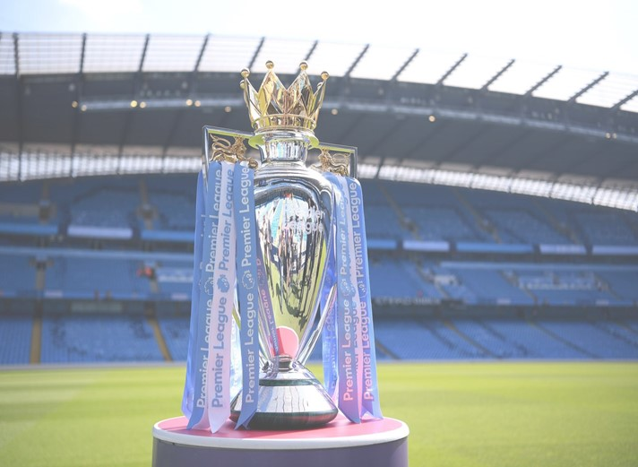
Foreword
My passion for football began in childhood. Every afternoon after school, I went outside to play with my friends. We used a small field near our homes, and we spent hours practicing, competing, and learning from each other. Those afternoons taught me discipline, teamwork, and persistence. They also helped me develop a deep appreciation for the sport, which grew stronger as I got older.
I chose to build this webpage about the Premier League because it is the league that best reflects my personal connection to football and my curiosity about the game. Given its professional organization, competitiveness, and global reach, I felt it was the ideal subject for a digital project. Through this site, I intend to explain the mechanics of how the Premier League operates, why it attracts such a massive worldwide audience, and the specific ways it has influenced my own understanding of the sport.
Introduction
Football is the most popular sport in the world and plays an essential role in the culture and everyday life of millions of people. In England, football is more than just a sport; it represents a long-standing tradition passed down from generation to generation. Among all football competitions, the Premier League stands out as one of the most exciting, competitive, and influential leagues in the world. It perfectly combines history, passion, and modern football, becoming a symbol of excellence and performance at the highest level.
The Premier League is the top division of English football and is watched by fans from all continents. Every weekend, millions of people follow the matches on television, online platforms, or directly from the stadiums. What makes the Premier League special is the high level of competition, where any team can defeat another, regardless of reputation or budget. This unpredictability keeps fans interested and creates unforgettable moments every season.
Another important aspect of the Premier League is its international character. Players and coaches from all over the world come to England to compete at the highest level. This diversity improves the quality of the game and allows different playing styles and cultures to mix. As a result, the Premier League is not only a national competition, but also a global phenomenon that connects people from different countries through their love for football.
In addition to entertainment, the Premier League has a strong economic and social impact. It generates significant revenue through television rights, sponsorships, and ticket sales, contributing to the development of clubs and local communities. Modern stadiums, youth academies, and charity programs show that the Premier League is involved in more than just football.
Chapter One
History of the
Premier League
1.1 The Dark Decade: English Football in the 1980s
To appreciate the success of the modern Premier League, one must understand the "dark ages" of English football during the 1980s. The sport was in a state of terminal decline. Stadiums were outdated, with many still using wooden stands and perimeter fencing that treated fans like animals.
Three major tragedies defined this era:
- The Heysel Stadium Disaster (1985): Resulted in a five-year ban for all English clubs from European competitions, isolating the English game from tactical innovations on the continent.
- The Bradford City Fire (1985): Highlighted the dangerous lack of safety standards in old stadiums.
- The Hillsborough Disaster (1989): Where 97 fans lost their lives, leading to the Taylor Report. This report was the catalyst for change, forcing clubs to convert to all-seater stadiums and modernize their infrastructure.
1.2 The "Big Five" and the Architect of Change
In the early 1990s, the "Big Five" clubs — Manchester United, Liverpool, Arsenal, Everton, and Tottenham Hotspur — were the driving force behind a breakaway. They were frustrated because the revenue from the Football League was shared equally among all four divisions. These clubs felt that since they attracted the most fans and television interest, they should keep a larger share of the profits.
A secret meeting took place in 1990 between Greg Dyke (Managing Director of London Weekend Television) and the representatives of the "Big Five." Dyke believed that if the top clubs broke away, television companies would pay massive sums for the exclusive rights to broadcast their matches.
1.3 The Birth of a New Era (1992)
On February 20, 1992, the First Division clubs resigned from the Football League. On May 27, 1992, the Premier League was formed as a limited company. While it remained part of the English football "pyramid" (allowing for promotion and relegation), it gained commercial independence.
1.4 The Inaugural Season (1992–1993)
The first season featured 22 teams (later reduced to 20 in 1995). The very first match was broadcast on a Sunday afternoon, marking the beginning of the "Super Sunday" tradition.
The 22 founding clubs were:
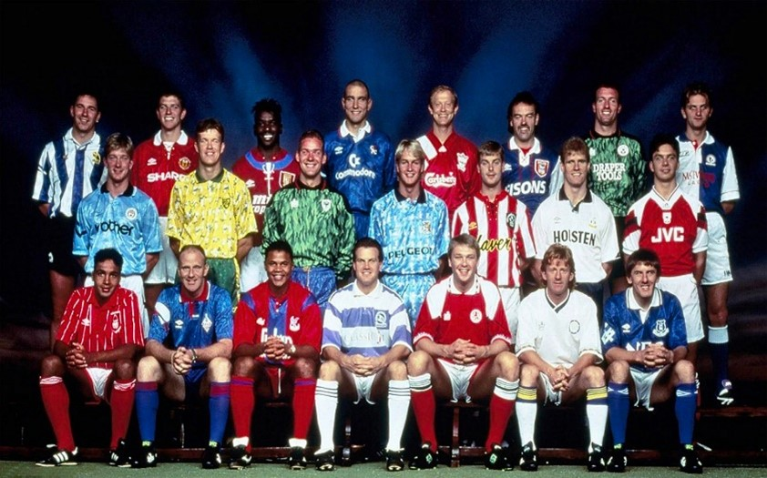
First Champions: Manchester United, led by Sir Alex Ferguson and Eric Cantona, ended their 26-year wait for a league trophy.
1.5 The Premier League in the 2000s
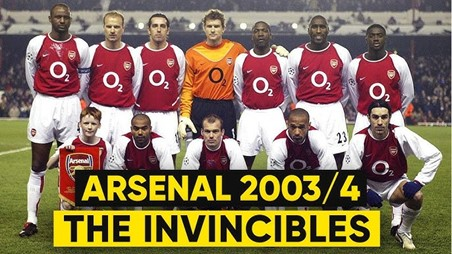
The 2000s were an important decade in the history of the Premier League, as the league became stronger, richer, and more popular worldwide. During this period, clubs such as Manchester United and Arsenal dominated the early years, with Arsenal achieving an unbeaten season in 2003–2004, known as "The Invincibles."
A major turning point came in 2003, when Roman Abramovich bought Chelsea FC, bringing significant financial investment into the league. Under manager José Mourinho, Chelsea won two Premier League titles and set new records, increasing competition among top clubs.
English teams also enjoyed success in European competitions, especially Liverpool's Champions League victory in 2005, which strengthened the international reputation of the Premier League. At the same time, global television coverage expanded, attracting millions of fans and turning the league into a global brand by the end of the decade.
1.6 Global Expansion and Modern Era
The transition into the 21st century marked the Premier League's shift from a domestic competition to a global sporting phenomenon. This era was defined by a massive influx of international talent and elite managers who raised the league's technical standards. With the arrival of billionaire owners and the stabilization of its commercial model, the league solidified its position as the wealthiest and most competitive football destination in the world. This modern evolution set the stage for the massive economic and cultural impact that defines the competition today.
Chapter Two
Competition Format
& Structure
The Premier League operates under a well-defined competition format that ensures fairness, excitement, and sporting merit. Since its foundation in 1992, the league has maintained a structure based on promotion and relegation, a balanced fixture system, and strict regulatory rules.
2.1 Number of Teams and Season Structure
The Premier League consists of 20 teams. Each season typically runs from August to May. During this period, every team plays 38 matches:
Each team faces every other team twice, once at their home stadium and once at their opponent's stadium. This format ensures balance and equal opportunity. At the end of the season, the team with the highest number of points is crowned champion.
2.2 Points System
The Premier League uses a standard points system:
If two or more teams finish the season with the same number of points, their positions are determined by: Goal difference / Goals scored / Head-to-head record (if necessary). This system encourages attacking football and rewards consistent performance throughout the season.
2.3 Promotion and Relegation
One of the defining characteristics of the Premier League is promotion and relegation. At the end of each season:
- The bottom three teams are relegated to the EFL Championship.
- The top two teams from the Championship are automatically promoted.
- A third team is promoted through a playoff system involving the teams finishing 3rd to 6th in the Championship.
This system keeps the competition intense not only at the top of the table but also at the bottom, where teams fight to avoid relegation.
2.4 Qualification for European Competitions
The Premier League also offers qualification for major European competitions organized by UEFA.
- The top four teams qualify for the UEFA Champions League.
- The fifth-placed team usually qualifies for the UEFA Europa League.
- Another Europa League or Conference League spot may be awarded depending on domestic cup results (FA Cup and EFL Cup winners).
Participation in European competitions brings financial benefits, international exposure, and prestige to the clubs.
2.5 Match Rules and Modern Technology
Matches in the Premier League follow the standard rules of football established by IFAB and FIFA. Each match lasts 90 minutes, divided into two halves of 45 minutes, with additional time added for stoppages.
In recent years, modern technology has been introduced to improve fairness and accuracy:
- VAR (Video Assistant Referee) helps referees review controversial decisions.
- Goal-line technology determines whether the ball has completely crossed the goal line.
These technologies have significantly reduced human error, although they sometimes generate debate among fans and experts.
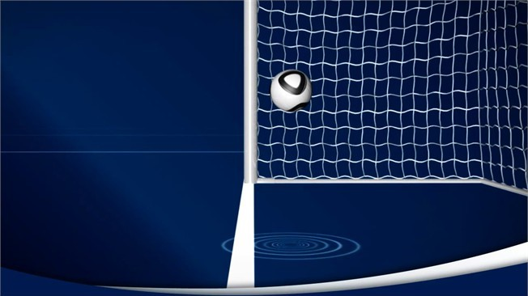
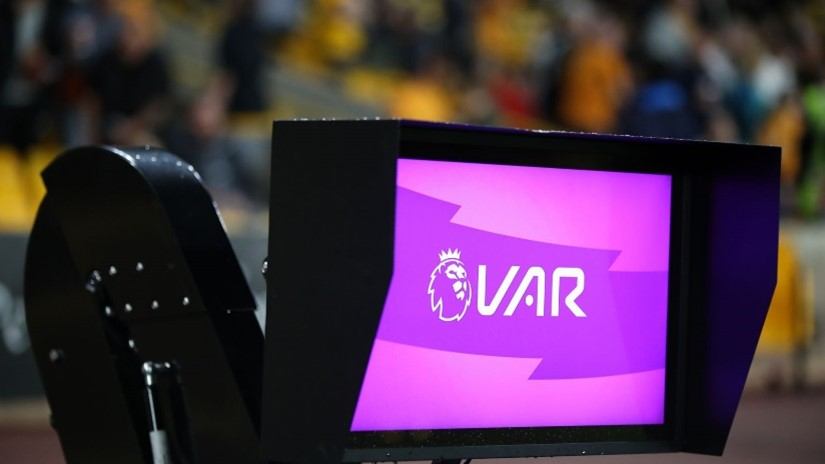
2.6 Fixture Schedule and Season Organization
The Premier League schedule is structured to ensure competitive balance across 38 rounds, with matches primarily staged during weekends and occasional midweek slots. A defining feature is the intensive festive period in December, where teams frequently play multiple fixtures within a short timeframe, often deciding the mid-season momentum. While the calendar is published annually in June, specific kick-off times remain subject to change to accommodate global television broadcasting requirements and club participation in domestic or European cup competitions.
Chapter Three
Famous Teams
& Rivalries
3.1 Manchester United
Founded in 1878, Manchester United is one of the most successful and globally recognized clubs in Premier League history. The club's most iconic era occurred under the legendary management of Sir Alex Ferguson (1986–2013), whose tactical leadership led the team to numerous domestic and international trophies, dominating English football for decades. This period of success was defined by world-class talents such as David Beckham, Ryan Giggs, and Cristiano Ronaldo, who not only secured the club's sporting legacy but also transformed Manchester United into a global brand, significantly increasing the popularity of the Premier League worldwide.
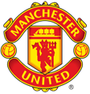
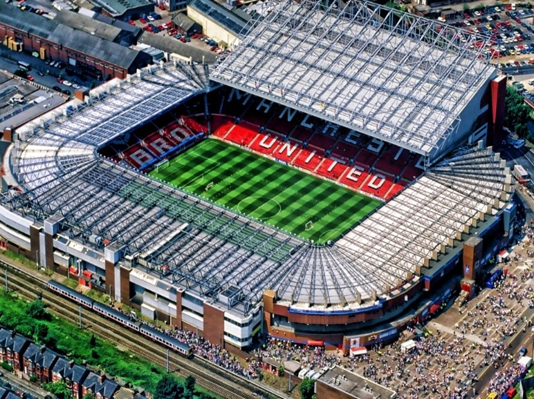
3.2 Liverpool FC
Founded in 1892, Liverpool FC is one of the most historic and respected institutions in English football, renowned for its rich traditions and the unique atmosphere of its home stadium, Anfield. The club's identity is deeply rooted in the bond with its supporters, famously symbolized by the anthem "You'll Never Walk Alone," which represents a global icon of sporting unity. Historically dominant in both domestic and European competitions, Liverpool entered a prestigious new era under manager Jürgen Klopp, culminating in the 2019–2020 Premier League title. This landmark victory ended a thirty-year wait for a league championship, re-establishing the club as a modern powerhouse at the forefront of the competition.
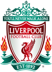
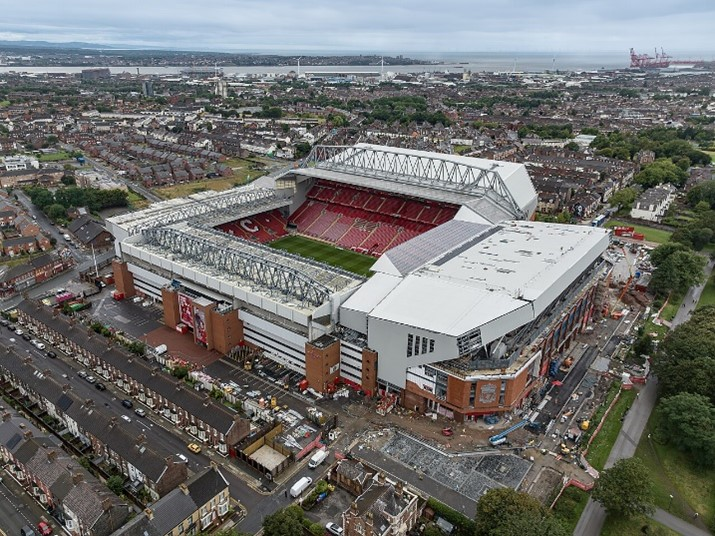
3.3 Arsenal FC
Established in 1886 and based in London, Arsenal FC is historically recognized for its commitment to an elegant, attacking style of football. The club's most transformative era occurred under manager Arsène Wenger (1996–2018), who modernized the English game and led the team to its greatest achievement: the "Invincibles" season of 2003–2004. By winning the Premier League title without a single defeat, Arsenal secured a unique place in football history. Today, the club plays at the state-of-the-art Emirates Stadium, opened in 2006, and remains a global sporting icon with a massive international following and a consistent presence at the top of the league.
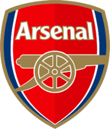
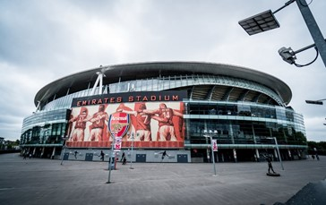
3.4 Chelsea FC
Founded in 1905 and based at the historic Stamford Bridge in West London, Chelsea FC has emerged as one of the most successful clubs in modern English football. The club's trajectory changed significantly during the 2000s, when heavy investment in world-class players and elite managers transformed it into a perennial contender for major trophies. This era of dominance resulted in multiple Premier League titles and was further solidified by two UEFA Champions League victories, in 2012 and 2021. Defined by iconic figures such as Frank Lampard, Didier Drogba, and John Terry, Chelsea remains a global powerhouse, consistently competing at the highest level of international football.
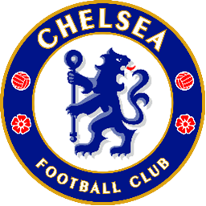
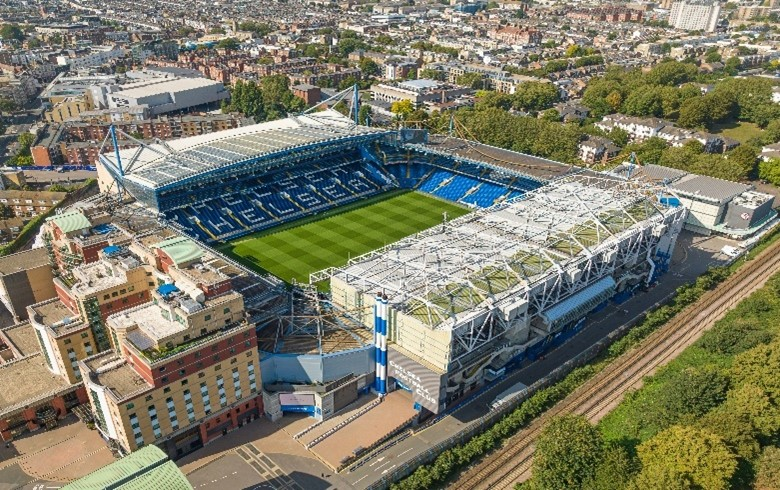
3.5 Manchester City
Founded in 1880 and based at the modern Etihad Stadium, Manchester City has undergone the most dramatic transformation in English football history. While traditionally overshadowed by their local rivals, the club's trajectory changed fundamentally in 2008 following significant international investment, which allowed for world-class infrastructure and squad development. Under the transformative management of Pep Guardiola, City revolutionized the Premier League with a highly technical, possession-based philosophy, leading to an unprecedented era of domestic dominance. This evolution culminated in the historic 2022–2023 season, where the club secured a monumental "Treble" — winning the Premier League, the FA Cup, and their first UEFA Champions League title. Driven by iconic players such as Sergio Agüero, Kevin De Bruyne, and Erling Haaland, Manchester City has established a new gold standard for excellence, evolving from a local contender into the world's premier footballing force.
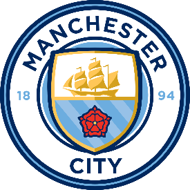
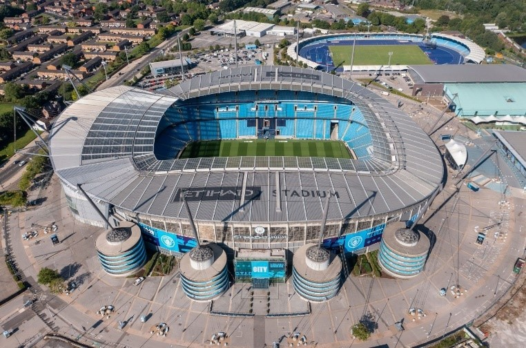
3.6 Historic Rivalries in English Football
Rivalries are a fundamental element of English football culture, deep-rooted in history, geography, and intense inter-city competition. These matches transcend regular league fixtures, as both players and supporters strive to assert their club's superiority. The most significant rivalries that define the Premier League's global appeal include:
- Manchester United vs. Liverpool FC: Known as the North West Derby, this is the most historic clash in English football. It is fueled by the industrial competition between the two cities and their relentless battle for domestic and European trophies.
- The North London Derby (Arsenal vs. Tottenham Hotspur): A rivalry defined by geographical proximity. Matches between these two London giants are famous for their intensity, high-scoring results, and the passionate divide between their neighboring fanbases.
- The Manchester Derby (United vs. City): While historically significant, this rivalry has reached new heights in the modern era. As both clubs now frequently compete directly for the Premier League title, the "battle for Manchester" has become one of the most watched sporting events worldwide.
Chapter Four
Legendary &
Modern Players
4.1 The Goal-Scoring Icons
The statistical history of the Premier League is defined by the scoring longevity and record-breaking efficiency of Alan Shearer and Wayne Rooney.
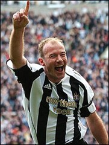
Alan Shearer
Alan Shearer remains the most prolific striker in Premier League history with a total of 260 goals. His career, spanning from the league's inception in 1992 until 2006, set the standard for the "number 9" role. Statistically, Shearer was most effective during his time at Blackburn Rovers, where he scored 112 goals in just 138 appearances. His 34 goals in the 1994-1995 season were instrumental in securing the Premier League title, a record for a 42-game season.
Wayne Rooney
Wayne Rooney is the second-highest scorer in the competition's history with 208 goals and holds the record for the third-highest number of assists (103). Between 2002 and 2018, he played for Everton and Manchester United, winning five Premier League titles. Rooney is the only player to have scored over 200 goals and provided over 100 assists, reflecting his tactical versatility as both a finisher and a playmaker. His 183 goals for Manchester United stood as a record for the most goals scored for a single club for over a decade.
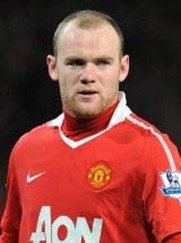
4.2 Midfield Generals
The tactical evolution of the central midfield position was centered on the intense physical and technical rivalry between Roy Keane and Patrick Vieira. The rivalry forced a higher standard of physical conditioning and tactical awareness across the entire league.
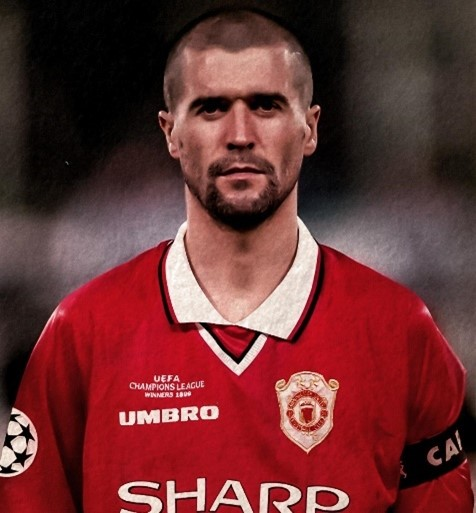
Roy Keane
Roy Keane was the defensive anchor for Manchester United between 1993 and 2005, winning seven Premier League titles. His primary function was ball recovery and distribution, maintaining a high pass completion rate to sustain offensive transitions. Statistically, Keane's influence was measured by his high volume of successful tackles and interceptions, which allowed his team to dominate the midfield. Despite receiving seven red cards, his tactical discipline ensured defensive stability for the most successful period in the club's history.
Patrick Vieira
Patrick Vieira joined Arsenal in 1996 and introduced a high-intensity "box-to-box" style, winning three Premier League titles. He was the captain of the "Invincibles" squad in 2003-2004, which completed an entire 38-match season without a single defeat. Vieira utilized his physical reach to disrupt opponent plays and his technical ability to carry the ball forward under pressure. His career was marked by a high success rate in midfield duels and eight red cards, reflecting the aggressive nature of his defensive role.
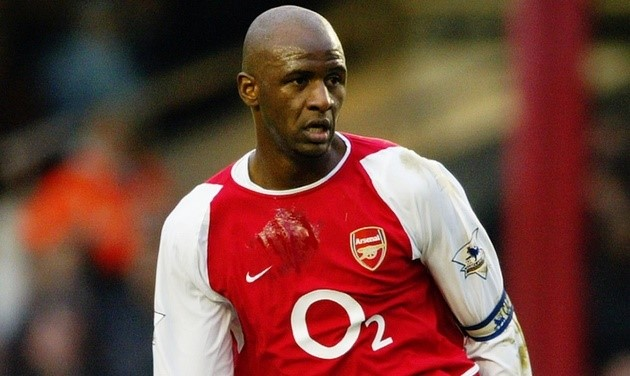
4.3 Creative Geniuses
The role of the playmaker in the Premier League has transitioned from a supporting forward to a deep-lying tactical anchor. This evolution is statistically evident in the careers of Paul Scholes and Kevin De Bruyne.
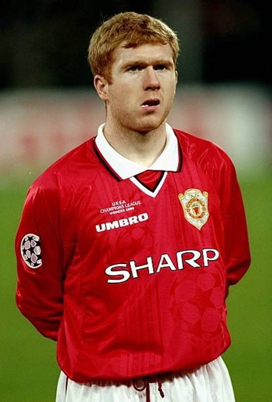
Paul Scholes
Paul Scholes operated as the primary playmaker for Manchester United for 20 seasons, recording 107 goals and 55 assists. His statistical value was found in his long-range distribution and his ability to switch the point of attack with high accuracy. Scholes won 11 Premier League titles, the highest for any English player, acting as the tactical link between defense and attack. His performance metrics were characterized by "pre-assists" and a pass completion rate that consistently exceeded 90% in high-pressure matches.
Kevin De Bruyne
Kevin De Bruyne represents the modern playmaker at Manchester City, becoming the fastest player to reach 100 Premier League assists. He has won the Playmaker of the Season award multiple times, holding the record for the most assists in a single season (20, shared with Thierry Henry). De Bruyne's tactical role involves operating in the "half-spaces," delivering precise crosses and key passes that result in high "Expected Assists" (xA) numbers. His efficiency has been central to Manchester City's four consecutive league titles between 2021 and 2024.
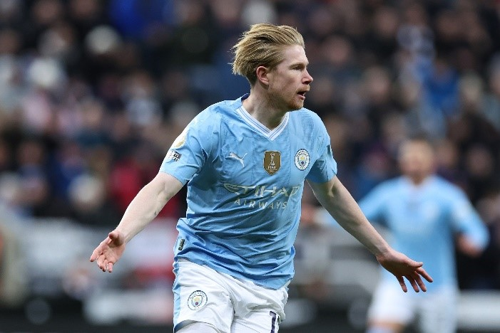
4.4 Defensive Titans
The defensive structure in the Premier League has evolved from physical marking to a more tactical, ball-playing approach. This change is best represented by the careers of Rio Ferdinand, John Terry, and Virgil van Dijk.
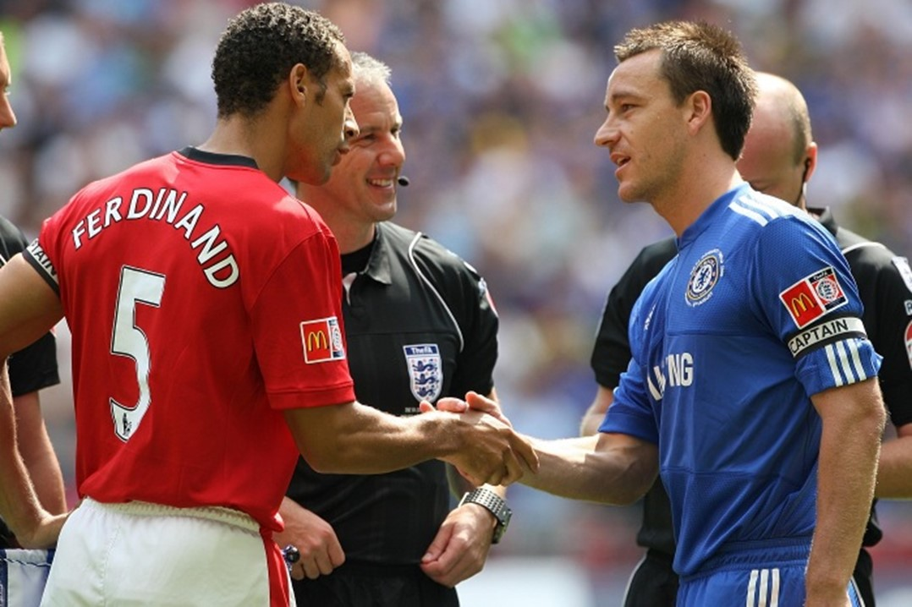
Rio Ferdinand and John Terry dominated the league for over a decade, defining two distinct styles of excellence. Ferdinand, a six-time champion with Manchester United, was a proactive defender with an 85% pass completion rate, often acting as the starting point for attacks. In contrast, John Terry was the tactical heart of Chelsea's defense, scoring a record 41 goals and captaining the 2004-2005 side that conceded a historic low of only 15 goals. Their combined technical elegance and defensive organization set the gold standard for modern center-backs.
Virgil van Dijk represents the modern era, famously going 50 consecutive matches without being dribbled past. With an aerial success rate over 75% and elite recovery speed, his arrival was the catalyst for Liverpool's 2020 title.
Similarly, the goalkeeper's role has evolved beyond shot-stopping to vital defensive organization. Petr Čech holds the all-time record with 202 clean sheets, while Peter Schmeichel became the first goalkeeper to win the Player of the Season award, proving that defensive stability is as vital to winning titles as offensive power.
4.5 Global Superstars
The commercial and athletic development of the Premier League is defined by players whose statistical output and global recognition transcend the sport. Legends like Eric Cantona and Cristiano Ronaldo provided the technical and marketing foundation for the competition's explosive growth across different decades.
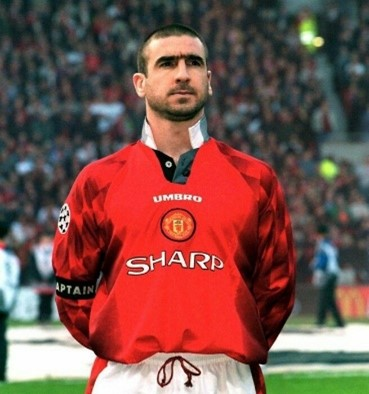
Eric Cantona
Eric Cantona played in the Premier League between 1992 and 1997, winning four league titles in five seasons. His tactical role was that of a deep-lying forward, recording 70 goals and 56 assists in only 156 appearances. His statistics indicate a direct goal involvement in over 80% of the matches he played, acting as the primary creator for Manchester United during the 1990s. His premature retirement at the age of 30 left behind one of the highest win-percentage ratios per match in the history of the league.
Cristiano Ronaldo
Cristiano Ronaldo is globally recognized for his transformation from a technical winger into a high-volume goal scorer. During the 2003–2009 period, he won three consecutive titles and set a record of 31 goals in 34 matches during the 2007-2008 season. In 2008, he became the first Premier League player to win the Ballon d'Or in the modern era of the competition. His figures include 84 goals during his first stint at Manchester United, characterized by high efficiency in free-kicks and aerial duels before his record-breaking transfer to Real Madrid.
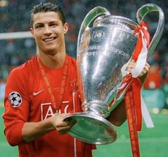
4.6 Modern Icons
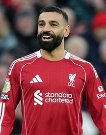
Mohamed Salah
Mohamed Salah has maintained an elite scoring rate since joining Liverpool in 2017, securing three Golden Boot awards (2018, 2019, 2022). In his debut season, he set a 38-game record with 32 goals, and he remains the highest-scoring African player in Premier League history with over 150 goals. Operating as an inverted winger, Salah has also recorded over 70 assists, making him a dual threat in Liverpool's attacking system. His consistency was a primary factor in the club's 2020 Premier League title win, where he played a central role in their offensive metrics.
Erling Haaland
Erling Haaland set a new all-time Premier League record by scoring 36 goals in 35 appearances during the 2022-2023 season. His scoring rate of 1.03 goals per match is the highest in the history of the competition for a player with a full season of appearances. Tactically, Haaland is a specialized center-forward who utilizes his physical strength and positioning to convert high-difficulty chances inside the penalty area. In his first two seasons at Manchester City, he secured two consecutive Golden Boots and two league titles, redefining the statistical expectations for a modern "target man."
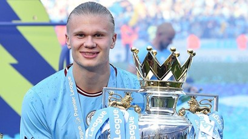
4.7 The Importance of Academies
The sustainability of the Premier League relies on club academies to produce "homegrown" talent, ensuring a tactical balance between international transfers and domestic development.
The most iconic success story remains Manchester United's "Class of '92", featuring legends like David Beckham, Ryan Giggs, and Paul Scholes. This group provided over 2,000 combined appearances and formed the core of the 1999 "Treble" winning squad, proving that world-class teams could be built through internal development. Their two-decade dominance significantly reduced the club's reliance on external recruitment while maintaining a strong local identity.
In the modern era, the "Homegrown Player" rule requires teams to include at least eight locally trained players in their 25-man squads, making academies a financial and tactical necessity. Elite talents like Phil Foden (Manchester City) and Bukayo Saka (Arsenal) represent the peak of modern youth systems, combining high technical ability with tactical continuity. Furthermore, these academies are crucial for Financial Fair Play (FFP) compliance, as homegrown players represent pure profit in accounting terms, providing clubs with high-value assets and long-term economic stability.
Chapter Five
Financial Power &
Global Broadcasting
5.1 Global Broadcasting Revenue Analysis
The Premier League's financial dominance is primarily driven by its massive television rights deals, which currently generate an unprecedented £3.9 billion annually. A defining shift in the 2022–2025 cycle was that international broadcast rights surpassed domestic ones for the first time, reaching a total value of over £5 billion for the three-year period. This transition proves that the league is no longer just a British sporting event, but a premium global export.
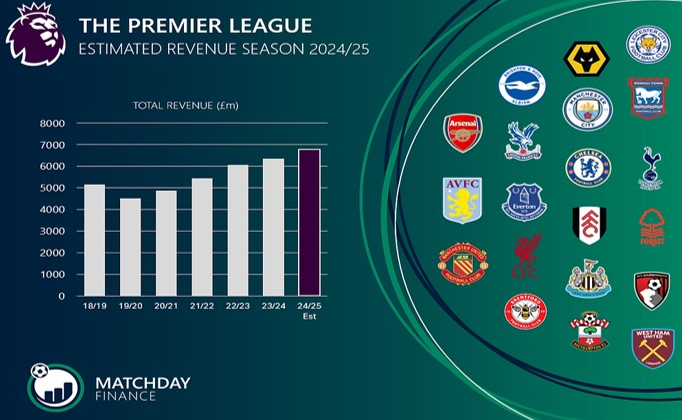
5.2 The Revenue Distribution Model
To maintain competitive balance, the league uses a sophisticated 50-25-25 distribution formula. This ensures that the wealth is shared across the entire table, rather than being concentrated only at the top:
- 50% Equal Share: Half of the domestic and 100% of the international funds are split equally among all 20 clubs.
- 25% Facility Fees: Allocated based on how many times a club's matches are broadcasted live.
- 25% Merit Payments: Awarded based on the final league position, with each place higher being worth roughly £2.2 million.
5.3 Commercial Sustainability and Global Reach
Beyond television, the league maintains its financial health through a massive commercial ecosystem. While clubs spend record amounts on player salaries, the league manages a sustainable Wage-to-Turnover ratio of approximately 70%. With a cumulative global audience of 3.2 billion viewers, the Premier League has successfully leveraged its "Iconic Clubs" to secure high-value partnerships in the US and Asian markets, transforming a domestic competition into the world's leading entertainment brand.
Conclusion
In conclusion, the Premier League has evolved from a traditional football competition into the world's most dominant sports and entertainment brand. Since its rebrand in 1992, the league has successfully combined a rich historical heritage with a forward-thinking commercial strategy. By prioritizing global broadcasting rights and maintaining a highly competitive environment where "any team can beat anyone," the Premier League has managed to surpass its European rivals in both viewership and financial sustainability.
The success of the competition is deeply rooted in the prestige of its "Big Six" clubs, whose historic rivalries and iconic players have captured the imagination of billions of fans worldwide. As analyzed in this project, the rise of clubs like Manchester City and the enduring legacy of institutions like Manchester United and Liverpool FC provide a unique blend of tradition and modern excellence. This cultural impact, paired with an equitable revenue distribution model, ensures that the league remains unpredictable, exciting, and elite.
Ultimately, the Premier League represents the gold standard of professional sports management. Its ability to balance massive financial growth with a commitment to the fundamental values of English football has created a product that transcends borders. As long as the league continues to attract the world's best talent and maintain its unique connection with global supporters, it will undoubtedly remain at the pinnacle of international football for the foreseeable future.